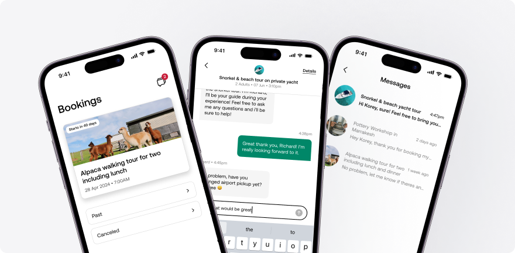

01
Product + Design Leadership
I align design, product, and engineering around outcomes, not output, and help teams execute with clarity at scale.
Designer + Product Leader
I bring together data, user insight, and business strategy to make better decisions and build strong, collaborative teams.
01
I align design, product, and engineering around outcomes, not output, and help teams execute with clarity at scale.
02
Deep experience in high-traffic consumer marketplaces across discovery, trust, conversion, and retention.
03
I design operating models and product systems that increase consistency, speed, and long-term product quality.
Featured Work

Viator's app was close to being pulled from Apple and Google Play. I took over leadership, made the case for full reinvestment, and led the design and product transformation that turned it into the company's highest-converting surface.
Read case studyLed cross-functional adoption of standards and governance that reduced UX fragmentation and increased delivery velocity.
Read case studyBuilt resilient teams, clarified product direction, and sustained momentum across both rapid scaling and restructuring periods.
Read case studyLeadership Philosophy
If you are hiring for a Senior Director or VP-level role, I would love to connect.